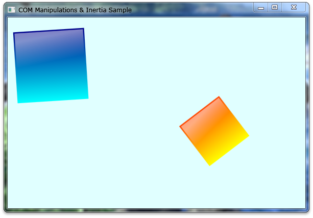

title: Manipulation and Inertia Sample description: The Manipulation and Inertia sample shows how to add Windows Touch support to native Windows-based applications that use the Windows Touch API. ms.assetid: 6a6e2e39-026e-47a3-b936-16f6a740a3af keywords:
The Manipulation and Inertia sample shows how to add Windows Touch support to native Windows-based applications that use the Windows Touch API. The sample implements the basic features of the API to enable translation, rotation, and scaling for objects and applying inertia properties to them. The sample also shows how to give your Windows Touch applications basic mouse support. The following image shows how the sample looks when it runs.

The boxes with gradients can be manipulated independently by a user when they run the application from a computer that supports Windows Touch.
Before you can receive touch input, you first must notify the system that your application is a Windows Touch application by calling the following function:
RegisterTouchWindow(g_hWnd, 0);
The _IManipulationEvents event sink contains three functions: ManipulationStarted, ManipulationDelta, and ManipulationCompleted. These callback functions are used by the IManipulationProcessor interface and IInertiaProcessor interface for returning the values calculated by the processors after they invoke the ProcessTime, ProcessUpWithTime, ProcessDownWithTime, and ProcessMoveWithTime functions. The following code example shows an example implementation of a _IManipulationEvents interface.
#include "cmanipulationeventsink.h"
#include <math.h>
CManipulationEventSink::CManipulationEventSink(HWND hWnd, CDrawingObject *dObj, int iTimerId, BOOL inertia) {
// Manipulation & Inertia Processors
m_manip = NULL;
m_inert = NULL;
// Connection points for COM.
m_pConPointContainer = NULL;
m_pConnPoint = NULL;
// Reference to an object associated with this event sink.
m_dObj = dObj;
// Handle to the window used for computing boundaries.
m_hWnd = hWnd;
// The unique timer id for this manipulation event sink.
m_iTimerId = iTimerId;
m_bInertia = inertia;
m_cRefCount = 1;
}
CManipulationEventSink::~CManipulationEventSink()
{
}
HRESULT STDMETHODCALLTYPE CManipulationEventSink::ManipulationStarted(
FLOAT x,
FLOAT y)
{
KillTimer(m_hWnd, m_iTimerId);
return S_OK;
}
HRESULT STDMETHODCALLTYPE CManipulationEventSink::ManipulationDelta(
FLOAT x,
FLOAT y,
FLOAT translationDeltaX,
FLOAT translationDeltaY,
FLOAT scaleDelta,
FLOAT expansionDelta,
FLOAT rotationDelta,
FLOAT cumulativeTranslationX,
FLOAT cumulativeTranslationY,
FLOAT cumulativeScale,
FLOAT cumulativeExpansion,
FLOAT cumulativeRotation)
{
FLOAT pivot = 0.0f;
// Apply transformation based on rotationDelta (in radians).
FLOAT rads = 180.0f / 3.14159f;
m_dObj->Rotate(rotationDelta*rads, x, y);
// Apply translation based on scaleDelta.
m_dObj->Scale(scaleDelta);
// Apply translation based on translationDelta.
m_dObj->Translate(translationDeltaX, translationDeltaY);
if(!m_bInertia)
{
// Set values for one-finger rotations.
FLOAT fPivotRadius = (FLOAT)(sqrt(pow(m_dObj->GetWidth()/2, 2)
+ pow(m_dObj->GetHeight()/2, 2)))*0.4f;
FLOAT fPivotPtX = m_dObj->GetCenterX();
FLOAT fPivotPtY = m_dObj->GetCenterY();
m_manip->put_PivotPointX(fPivotPtX);
m_manip->put_PivotPointY(fPivotPtY);
m_manip->put_PivotRadius(fPivotRadius);
}
return S_OK;
}
HRESULT STDMETHODCALLTYPE CManipulationEventSink::ManipulationCompleted(
FLOAT x,
FLOAT y,
FLOAT cumulativeTranslationX,
FLOAT cumulativeTranslationY,
FLOAT cumulativeScale,
FLOAT cumulativeExpansion,
FLOAT cumulativeRotation)
{
if(!m_bInertia)
{
SetupInertia();
// Kick off timer that handles inertia.
SetTimer(m_hWnd, m_iTimerId, DESIRED_MILLISECONDS, NULL);
}
else
{
// Stop timer that handles inertia.
KillTimer(m_hWnd, m_iTimerId);
}
return S_OK;
}
The API provides an implementation of the IManipulationProcessor and IInertiaProcessor interfaces. You should create an instance of and reference the COM objects from the IManipulationEvents event sink that was implemented earlier.
The input data must be extracted from the WM_TOUCH messages and then later must be processed to feed the correct manipulation processor.
switch (msg)
{
case WM_TOUCH:
iNumContacts = LOWORD(wParam);
hInput = (HTOUCHINPUT)lParam;
pInputs = new TOUCHINPUT[iNumContacts];
// Get each touch input info and feed each
// tagTOUCHINPUT into the process input handler.
if(pInputs != NULL)
{
if(GetTouchInputInfo(hInput, iNumContacts,
pInputs, sizeof(TOUCHINPUT)))
{
for(int i = 0; i < iNumContacts; i++)
{
// Bring touch input info into client coordinates.
ptInputs.x = pInputs[i].x/100;
ptInputs.y = pInputs[i].y/100;
ScreenToClient(g_hWnd, &ptInputs);
pInputs[i].x = ptInputs.x;
pInputs[i].y = ptInputs.y;
g_ctDriver->ProcessInputEvent(pInputs[i]);
}
}
}
delete [] pInputs;
break;
}
[!Note]
In order to use the ScreenToClient function, you must have high DPI support in your application. For more information about supporting high DPI, see High DPI.
After the data is extracted from the WM_TOUCH messages by using the GetTouchInputInfo function, feed the data into the manipulation processor by invoking ProcessUpWithTime, ProcessDownWithTime, or ProcessMoveWithTime functions, depending on the dwFlag set in the TOUCHINPUT structure.
[!Note]
When supporting multiple manipulations, a new manipulation processor must be created if the dwID defined in the TOUCHINPUT structure must be used to send the data to the correct IManipulationProcessor object.
CoreObject* coCurrent = m_coHead;
while(coCurrent!=NULL && !bFoundObj)
{
if(dwEvent & TOUCHEVENTF_DOWN)
{
DownEvent(coCurrent, inData, &bFoundObj);
}
else if(dwEvent & TOUCHEVENTF_MOVE)
{
MoveEvent(coCurrent, inData);
}
else if(dwEvent & TOUCHEVENTF_UP)
{
UpEvent(coCurrent, inData);
}
coCurrent = coCurrent->coNext;
}
VOID CComTouchDriver::DownEvent(CoreObject* coRef, tagTOUCHINPUT inData, BOOL* bFound) {
DWORD dwPCursor = inData.dwID;
DWORD dwPTime = inData.dwTime;
int x = inData.x;
int y = inData.y;
// Check that the user has touched within an object's region and fed to the object's manipulation processor.
if(coRef->doDrawing->InRegion(x, y) &&
!HasCursor(coRef, dwPCursor))
{
...
// Feed values to the Manipulation Processor.
coRef->manipulationProc->ProcessDownWithTime(dwPCursor, (FLOAT)x, (FLOAT)y, dwPTime);
...
}
}
After the ManipulationCompleted method is invoked, the IManipulationProcessor object must set the values for the IInertiaProcessor object linked to the IManipulationProcessor to invoke inertia. The following code example shows how to set up the IInertiaProcessor object from the IManipulationProcessor method ManipulationCompleted.
int iVWidth = GetSystemMetrics(SM_CXVIRTUALSCREEN);
int iVHeight = GetSystemMetrics(SM_CYVIRTUALSCREEN);
RECT rc;
GetClientRect(m_hWnd, &rc);
FLOAT lCWidth = (FLOAT)rc.right;
FLOAT lCHeight = (FLOAT)rc.bottom;
// Set properties for inertia events.
// Deceleration for tranlations in pixel / msec^2.
m_inert->put_DesiredDeceleration(0.001f);
// Deceleration for rotations in radians / msec^2.
m_inert->put_DesiredAngularDeceleration(0.00001f);
// Calculate borders and elastic margin to be set.
// They are relative to the width and height of the object.
FLOAT fHOffset = m_dObj->GetWidth() * 0.5f;
FLOAT fVOffset = m_dObj->GetHeight() * 0.5f;
// Elastic margin is in pixels - note that it offsets the boundary.
FLOAT fHElasticMargin = 25.0f;
FLOAT fVElasticMargin = 25.0f;
FLOAT fBoundaryLeft = fHOffset + fHElasticMargin;
FLOAT fBoundaryTop = fVOffset + fVElasticMargin;
FLOAT fBoundaryRight = lCWidth - fHOffset - fHElasticMargin;
FLOAT fBoundaryBottom = lCHeight - fVOffset - fVElasticMargin;
// Set borders and elastic margin.
m_inert->put_BoundaryLeft(fBoundaryLeft);
m_inert->put_BoundaryTop(fBoundaryTop);
m_inert->put_BoundaryRight(fBoundaryRight);
m_inert->put_BoundaryBottom(fBoundaryBottom);
m_inert->put_ElasticMarginLeft(fHElasticMargin);
m_inert->put_ElasticMarginTop(fVElasticMargin);
m_inert->put_ElasticMarginRight(fHElasticMargin);
m_inert->put_ElasticMarginBottom(fVElasticMargin);
// Set initial origins.
m_inert->put_InitialOriginX(m_dObj->GetCenterX());
m_inert->put_InitialOriginY(m_dObj->GetCenterY());
FLOAT fVX;
FLOAT fVY;
FLOAT fVR;
m_manip->GetVelocityX(&fVX);
m_manip->GetVelocityY(&fVY);
m_manip->GetAngularVelocity(&fVR);
// Set initial velocities for inertia processor.
m_inert->put_InitialVelocityX(fVX);
m_inert->put_InitialVelocityY(fVY);
m_inert->put_InitialAngularVelocity(fVR);
When your application closes, you must clean up your COM objects. The following code shows how you can free the resources that were allocated in the sample.
CComTouchDriver::~CComTouchDriver(VOID) {
CoreObject* coCurrent = m_coHead;
// Clean up COM objects.
while(coCurrent!=NULL)
{
coCurrent->inertiaEventSink->Release();
coCurrent->manipulationEventSink->Release();
coCurrent->inertiaProc->Release();
coCurrent->manipulationProc->Release();
coCurrent = coCurrent->coNext;
}
}
Multi-touch Manipulation Application, Manipulation and Inertia Sample, Windows Touch Samples